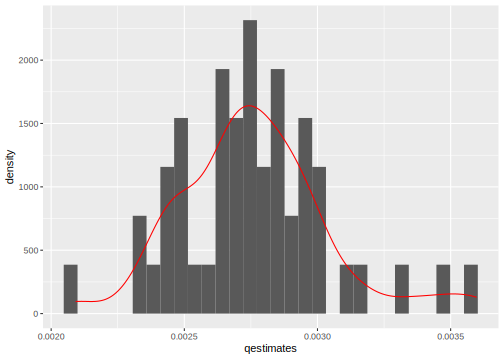
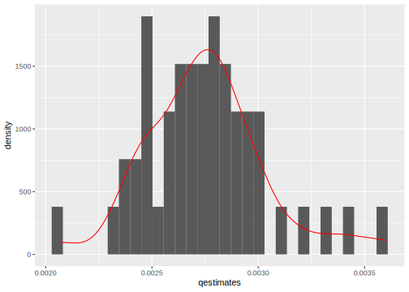

7.3 Uncertainty
Usually, we want to report a confidence interval around our predicted probabilities, average predicted probabilities, or around the difference in our predicted probabilities or difference in our average predicted probabilities.
This is different from the uncertainty of a coefficient, which we already have from our glm output. Here, if we say there is a 0.01 probability of a dispute, that is just an estimate, it is going to vary over repeated samples. We want to generate a confidence interval that represents this variability in \(\hat \pi\).
We have already discussed using the predict function in lm to generate confidence intervals for OLS estimates. In a limited set of cases, we can also use this shortcut for glm by taking advantage of the distribution being approximately normal on the scale of the linear predictor. When we are estimating confidence intervals around 1) one or multiple single quantities of interest (a predicted probability, as opposed to a difference in predicted probability) 2) where the \(X\) values are set at specific values (and not at their observed values) then, we can plug this into the predict function in the following way:
- Generate the prediction and standard errors of the prediction on the
linklinear predictor scale.- On the scale of the linear predictor, the standard errors of the prediction are calculated as \(\sqrt{\mathbb{x'}_c \text{vcov(fit)} \mathbb{x}_c}\) using the delta method.
- Calculate the CI on the linear predictor scale: \(CI(\hat \theta) = \hat \theta - z_{crit}*se_{\hat \theta}\) ; \(\hat \theta + z_{crit}*se_{\hat \theta}\)
- \(z_{crit}\) for the 95% confidence interval is 1.96 (so this is saying +/- about 2 standard errors). We get this by using
qnorm().
- \(z_{crit}\) for the 95% confidence interval is 1.96 (so this is saying +/- about 2 standard errors). We get this by using
- Convert the prediction and confidence intervals to the response scale.
Here is an example:
## Predicted probability when Allies = 1 and all other covariates = 0
## Note type = "link"
allies1.link <- predict(out.logit, newdata =
data.frame( MajorPower = 0,
Contiguity = 0,
Allies = 1,
ForeignPolicy = 0,BalanceOfPower = 0,
YearsSince = 0),
type = "link", se = T)
allies1 <- plogis(allies1.link$fit)
allies1.lb <- plogis(allies1.link$fit - qnorm(.975)*allies1.link$se.fit)
allies1.ub <- plogis(allies1.link$fit + qnorm(.975)*allies1.link$se.fit)
## Confidence interval
c(allies1, allies1.lb, allies1.ub) 1 1 1
0.002632504 0.001302711 0.005312514 ## By hand (using x as a k x 1 vector)
x.c <- rbind(1, 0, 0, 1, 0, 0, 0)
se.hand <- sqrt(t(x.c) %*% vcov(out.logit) %*% x.c)
p.hand <- t(x.c) %*% coef(out.logit)
allies1.hand <- plogis(p.hand)
allies1.hand.lb <- plogis(p.hand- qnorm(.975)*se.hand)
allies1.hand.ub <- plogis(p.hand + qnorm(.975)*se.hand)
c(allies1.hand, allies1.hand.lb, allies1.hand.ub)[1] 0.002632504 0.001302711 0.005312514Beyond this simple case, there are three general approaches to calculating the uncertainty of the quantities of interest. Here is a video with an overview of these three processes. The course notes contain additional detail below. It continues with the anes data example from Banda and Cassese in section 6, as did the other video in this section.
- Delta Method (based on calculus, first order Taylor Expansion approximation)
- Bootstrapping (very flexible, common, computationally demanding)
- Quasi-bayesian (flexible, less computationally demanding), also described as simulation/Monte carlo simulation.
For now, we will focus on the second two methods, but some statistical software programs will report uncertainty estimates based on the Delta method. Here is more information on this method and the deltamethod function in R.
7.3.1 Bootstrapping
Bootstrapping simulates the idea of conducting repeated samples to generate a distribution of estimates of your quantity of interests. We “resample” from our existing data to generate thousands of new datasets, and use each dataset to generate a slightly different quantity of interest. This distribution is then used to construct the confidence interval.
Process:
- Sample from the data to generate new data frame
- Run the model: this gives new coefficient estimates and new covariate matrices
- Use new coefficient and covariate estimates to compute quantity of interest
- Replicate the previous process for about 1000 iterations to get 1000 estimates of quantity of interest
- Use the distribution of these estimates to calculate confidence intervals
Why? How does this work?
- It is simulating the exercise of hypothetical repeated samples
- Similar to Law of Large Numbers- with sufficient iterations, the empirical “bootstrap” distribution is a good approximation of the true distribution (will get closer and closer to the truth)
- It won’t help us correct a bad estimate– have to work from the data we have.
- The logic is we think the distribution of \(\bar x\) sample estimate is centered on \(\mu\) (the truth), and then we assume the distribution of \(\bar x*\) (the bootstrapped estimate) is centered on \(\bar x\)
This would be a good place to review the Bootstrap resources at the front of the section:
- Pezullo, John. The Bootstrap Method for Standard Errors and Confidence Intervals.
- Banks, David. Lecture from Duke University.
How do we implement this procedure?
Example
Find the point estimate and 95% CI for the average predicted probability of conflict when the dyad are allies and all other covariates are held at observed values
## Original regression
out.logit <-glm(Conflict ~ MajorPower + Contiguity + Allies + ForeignPolicy +
BalanceOfPower + YearsSince,
family = binomial(link = "logit"), data = mids)
## We need to build our bootstrap procedure
## Let's assume we just want 1 iteration
## Step 1: sample to generate new data
## this selects N row numbers from mids, with replacement
wrows <- sample(x =1:nrow(mids), size = nrow(mids), replace = T)
## Create subset of data based on these rows
subdata <- mids[wrows, ]
## Step 2: run your regression model with the new data
boot.logit <-glm(Conflict ~ MajorPower + Contiguity + Allies + ForeignPolicy +
BalanceOfPower + YearsSince,
family = binomial(link = "logit"), data = subdata)
## Step 3: generate average predicted probability
Xboot <- model.matrix(boot.logit)
Xboot[, "Allies"] <- 1
Bh <- coef(boot.logit)
p.boot <- mean(plogis(Xboot %*% Bh))Expand below for more details on what the sample function does.
Let’s say we have a dataframe of different colors and shapes.
somedata <- data.frame(colors = c("red", "blue", "yellow", "green",
"purple", "orange", "black"),
shapes = c("circle", "square", "triangle",
"rectangle", "diamond", "line", "sphere"))
somedata colors shapes
1 red circle
2 blue square
3 yellow triangle
4 green rectangle
5 purple diamond
6 orange line
7 black sphereI could generate a new “resampled” dataset with the sample function. We tell the function three things: 1) choose from the row numbers in my dataframe (1:nrow(somedata)), 2) pick \(N\) row numbers in total (nrow(somedata)), 3) Each time you pick a given row number \(i\), put it back in the data, allowing the possibility that you may randomly sample it again (replace = TRUE).
sample(1:nrow(somedata), nrow(somedata), replace = TRUE)[1] 7 7 5 2 7 5 4sample(1:nrow(somedata), nrow(somedata), replace = TRUE)[1] 1 1 1 1 4 3 4sample(1:nrow(somedata), nrow(somedata), replace = TRUE)[1] 3 3 2 1 7 1 5What happened is the function generated a set of row numbers. Note how it is possible for the same row number to be picked multiple times. Each time we run the sample function, we get slightly different row numbers.
We can subset our data based on these row indices.
## store row indices
wrows <- sample(1:nrow(somedata), nrow(somedata), replace = TRUE)
wrows[1] 4 6 2 2 6 1 2## subset data to include rows sampled
## note if row indices are in wrows more than once, they will also be in the subset more than once
subdata <- somedata[wrows,]
subdata colors shapes
4 green rectangle
6 orange line
2 blue square
2.1 blue square
6.1 orange line
1 red circle
2.2 blue squareGiven that each time the sample function runs, we get slightly different random samples of the data, that’s how we end up with a distribution of slightly different estimates of our quantities of interest. Each time the regression is run with a slightly different dataset.
This gives us one estimate of the average predicted probability stored in p.boot. However, the idea of a bootstrap is that we repeat this procedure at least 1000 times to generate a distribution of estimates of the quantity of interest, the average predicted probability in this case.
We could literally repeat that code chunk 1000 times…. but, we have better things to do than that much copy/paste. Instead, we will create a function that will do this automatically.
To do so, we are going to wrap our procedure above inside the syntax for creating functions in R. In R, to create a function,
- We first name the function. (Let’s call this
myboot. You could call yours anything.) - The next syntax is always
myboot <- function(){}. - Inside the
function()part, you tell R what you are going to supply the function each time you want it to run. Sometimes functions only have one input, others likelmhave multiple inputs.- For example, in the function
mean(x), we always supply that function with a vector of values. - For this bootstrap example, we are going to write the function as one where we will supply the function with a dataframe. Let’s call this
df.
- For example, in the function
- The inside part of the function, between the
{}is the procedure from above. All we do is- Instead of writing
mids, we keep it generic by writingdf. - We add a final line that tells R what we want it to
return()as the output of the function. Here, we want it to return the average predicted probability.
- Instead of writing
## We need to build our bootstrap function
## Step 4: Let's wrap our current steps into a function that we can replicate
## Note: all we need as an input is our data.frame mids
## I will label it something generic to show how a function can work
myboot <- function(df){
wrows <- sample(x =1:nrow(df), size = nrow(df), replace = T)
## Create subset of data based on these rows
subdata <- df[wrows, ]
## Step 2: run your regression model with the new data
boot.logit <-glm(Conflict ~ MajorPower + Contiguity + Allies + ForeignPolicy +
BalanceOfPower + YearsSince,
family = binomial(link = "logit"), data = subdata)
## Step 3: generate average predicted probability
Xboot <- model.matrix(boot.logit)
Xboot[, "Allies"] <- 1
Bh <- coef(boot.logit)
p.boot <- mean(plogis(Xboot %*% Bh))
return(p.boot)
}Note: here, our quantity of interest is the predicted probability of a dispute when the dyad are Allies. Let’s say, instead, we wanted the difference in predicted probability of a dispute between Allies and Non-Allies. Well, we would just adjust our function to calculate the mean probabilities for Allies and Non-Allies and return the difference in these means as the quantity of interest. We would then get 10000 estimates of this difference in probabilties.
Now that we have the function from above, instead of copying/pasting this 1000 times, we will use the function called replicate which will do this for us. We indicate the number of estimates we want and then indicate which function (and in our case, which dataframe inside the function) we want to replicate.
## This may take a minute to run.
## We will do just 50, Normally you will want this to be more like 1000
set.seed(1234) # this helps us get the same results each time, good for reproducibility
myestimates <- replicate(50, myboot(mids))The bootstrapping approach is very computationally demanding given it has to repeat an operation several (thousand) times. After you hit “run,” just sit back, relax and wait for the water to run dry.
For a troubleshooting tip, expand.
If you get an error message at the replicate(1000, myboot(mids)) stage, it is best to see if your function runs at all. Try just the below to see if it generates output:
myboot(mids)[1] 0.002250429Each time we replicate the function, it will generate slightly different results because the sample functions is randoming sampling rows of data each time. We can plot the distribution of estimates to show this.
library(ggplot2)
ggplot(data.frame(x = myestimates), aes(x = myestimates)) +
geom_histogram(aes(y=..density..)) + geom_density(color="red")`stat_bin()` using `bins = 30`. Pick better value with `binwidth`.
The final step after generating the bootstrap distribution of estimates is to use it to construct a confidence interval for the quantity of interest. There are a few ways to do this.
- Normal approximation
- Percentile
- Bias correction
In each approach, we take our original “point estimate” from the computation of the quantity of interest from our original data and use the bootstrap estimates for the lower and upper bounds of the confidence interval. Here we will assume we want a 95% confidence interval.
## Find the original point estimate
Bh <- coef(out.logit)
X1 <- model.matrix(out.logit)
X1[, "Allies"] <- 1
pe1 <- mean(plogis(X1 %*% Bh))
## Normal
c((pe1 - qnorm(.975)*sqrt(var(myestimates))),(pe1 + qnorm(.975)*sqrt(var(myestimates))))[1] 0.002174802 0.003345002## Percentile
quantile(myestimates, c(0.025, .975)) 2.5% 97.5%
0.002275356 0.003431285 ## Bias correction
bc <- 2*pe1 - myestimates
quantile(bc, c(0.025, .975)) 2.5% 97.5%
0.002088520 0.003244449 Each of these is pretty commonly used, but they may generate slightly different results.
7.3.2 Simulated Confidence Intervals
Quasi-Bayesian or simulated confidence intervals take advantage of the large sample properties of our estimates \(\hat \beta\) having a Normal sampling distribution due to the Central Limit Theorem.
Like the bootstrap, the simulation procedure also generates hypothetical new samples. However, here, we are sampling new \(\hat \beta\) estimates each time instead of sampling a new underlying dataset each time. This allows use to skip the step of generating a new dataset and running the regression 1000 times. Here, we just run the regression model once. The simulation process takes place after this step.
Process
- Estimate your model (e.g., with
optimorglm) - Sample \(\sim\) 1000 new estimates of the vector of \(\hat \beta\) by using the
vcovof \(\hat \beta\) to generate the uncertainty - For each of these new \(\hat \beta_c\), calculate \(\hat \theta_c\), in this case, the predicted probabilities.
- Estimate “fundamental uncertainty” by drawing new y’s based on these parameters
- Only necessary in some cases. Depends on Jensen’s Inequality discussed in the Gary King resources and in the details on the use of
rbinomfunction below. - We are going to average over this, which means we are calculating “expected values.”
- Only necessary in some cases. Depends on Jensen’s Inequality discussed in the Gary King resources and in the details on the use of
- Use this distribution to compute the CI’s
This would be a good place to review the resources from Gary King:
- Overview of simulation approach for calculating uncertainty from King, Tomz, and Wittenberg 2000.
- Lecture video from Gary King on simulating quantities of interest
Example
The code for this approach will more simple in a case where we are computing quantities of interest when covariates are held at means or representative values (cases where we get just one predicted probability associated with each set of \(X\) values). It will look a little more complex in cases where we want to hold covariates at observed values and calculate the average predicted probability.
First, let’s find the point estimate and 95% CI for the predicted probability of conflict when the dyad are Allies, and all other covariates are held at zero.
## install.packages("mvtnorm")
library(mvtnorm)
## Step 2: Sample 1000 new Bhs (we will use 50 for this example)
## This uses the multivariate normal distribution for resampling
set.seed(1234)
numsims <- 50
qb.beta <- rmvnorm(numsims, coef(out.logit), vcov(out.logit))
## This generates numsims X k coefficients matrix
## Step 3: Iterate through the estimates
## Create an empty vector to store 1000 quantities of interest
qestimatessimple <- rep(NA, numsims)
## Here, our covariate matrix stays the same each time
## We have a 1 for intercept and 1 for Allies, everything else at zero
X1 <- cbind(1, 0, 0, 1, 0, 0 , 0)
## X1 is a 1 X k matrix
## Use a loop to iterate through each set of betas
for(i in 1:numsims){
## for each set of betas, calculate p probs
## for a given set of betas, this gives us nrow(X1) predicted probabilities
pestimate <-plogis(X1 %*% qb.beta[i,])
## Fundamental uncertainty
## not required for logit/probit, but we will show how
## rbinom generates 1000 0's or 1's based on the predicted probability
## We use rbinom bc of the bernoulli, other glm's will have other distributions
## then we take the mean to get our estimate of the predicted probability
moutcome <- mean(rbinom(numsims, 1, pestimate))
qestimatessimple[i] <-moutcome
## repeat for set of simulated betas
}
## Step 4: Similar to bootstrap distribution, find CI using the percentiles
quantile(qestimatessimple, c(0.025, 0.975)) 2.5% 97.5%
0.00 0.02 For more information on loops in R, you can follow this tutorial we created for 2020 SICSS-Rutgers.
Expand for details on rbinom.
rbinom is the random generation function for the binomial distribution. If we supply it with number of trials (in the Bernoulli, this is 1), and a probability of success, it will generate our desired number of outcomes according to this distribution.
For example, let’s say we wanted to generate a random set of 100 coin flips for a coin that is fair– where the probability of success is .5. We will get a sample of 0’s and 1’s. If we take the mean, it will be close to .5, and with enough coin flips, will converge on .5.
rb.res <- rbinom(100, 1, .5)
rb.res [1] 0 1 0 0 0 0 1 0 0 0 1 0 1 1 0 1 0 1 0 0 1 0 1 0 1 1 0 1 0 1 0 1 1 1 1 0 0
[38] 0 0 0 0 1 1 1 1 0 1 0 1 0 1 1 0 1 1 0 0 0 0 0 0 1 1 0 0 1 0 1 0 0 0 0 1 1
[75] 1 1 1 1 0 0 1 0 1 0 0 1 0 1 1 0 1 1 1 1 1 1 0 1 0 0mean(rb.res)[1] 0.49In logit/probit, this step is unneccessary because the \(\mathbb{E}(y_i) = \pi_i\). When we take the mean of our rbinom estimates, we are just going to recover the probability we supplied to it.
However, in other cases, Jensen’s inequality may apply, which states that \(\mathbb{E}[g(X)] \neq g(\mathbb{E}[X])\). For example, if we have an outcome that is distributed according to the exponential distribution: Here, the \(\theta\) is \(\lambda\) where \(\lambda = \frac{1}{e^{X\beta}}\) but \(\mathbb{E}(y)= \frac{1}{\lambda}\). Unfortunately, \(\mathbb{E}(\frac{1}{\hat \lambda}) \neq \frac{1}{\mathbb{E}(\hat \lambda)} = \frac{1}{\mathbb{E}(e^{X\beta})}\). For that example, the rexp() step in this case would be essential.
Find the point estimate and 95% CI for the average predicted probability of conflict when the dyad are allies and all other covariates are held at observed values. Here, the code is more complicated, because every time we generate a predicted probability (for any observed value), we need to go through the fundamental uncertainty step (when applicable).
## install.packages("mvtnorm")
library(mvtnorm)
## Step 2: Sample 1000 new Bhs (we will use 50 for this example)
## This uses the multivariate normal distribution for resampling
set.seed(1234)
numsims <- 50
qb.beta <- rmvnorm(numsims, coef(out.logit), vcov(out.logit))
## This generates numsims X k coefficients matrix
## Step 3: Iterate through the estimates
## Create an empty vector to store 1000 quantities of interest
qestimates <- rep(NA, numsims)
## Here, our covariate matrix stays the same
X1 <- model.matrix(out.logit)
X1[, "Allies"] <- 1
## Use a loop to
for(i in 1:numsims){
## for each set of betas, calculate p probs
## for a given set of betas, this gives us nrow(X1) predicted probabilities
pestimates <-plogis(X1 %*% qb.beta[i,])
## Fundamental uncertainty
## not required for logit/probit, but we will show how
## generate empty vector for outcomes
moutcomes <- rep(NA, numsims)
## for each probability estimate, calculate the mean of simulated y's
for(j in 1:length(pestimates)){
## rbinom generates 1000 0's or 1's based on the predicted probability
## We use rbinom bc of the bernoulli, other glm's will have other distributions
## then we take the mean to get our estimate of the predicted probability for a given observation
moutcomes[j] <- mean(rbinom(numsims, 1, pestimates[j]))
}
## take the mean of the predicted probability estimates across all observations
qestimates[i] <- mean(moutcomes)
## repeat for set of simulated betas
}
## Step 4: Similar to bootstrap distribution, find CI using the percentiles
quantile(qestimates, c(0.025, 0.975)) 2.5% 97.5%
0.00232977 0.00344796 Because the shortcut applies where we do not need to calculate fundamental uncertainty in the logit / probit case, we can simplify this to:
## install.packages("mvtnorm")
library(mvtnorm)
## Step 2: Sample 1000 new Bhs (we will use 50 for this example)
## This uses the multivariate normal distribution for resampling
set.seed(1234)
numsims <- 50
qb.beta <- rmvnorm(numsims, coef(out.logit), vcov(out.logit))
## This generates numsims X k coefficients matrix
## Step 3: Iterate through the estimates
## Create an empty vector to store 1000 quantities of interest
qestimates <- rep(NA, numsims)
## Here, our covariate matrix stays the same
X1 <- model.matrix(out.logit)
X1[, "Allies"] <- 1
for(i in 1:numsims){
pestimates <-plogis(X1 %*% qb.beta[i,])
qestimates[i] <- mean(pestimates)
}
## Step 4: Similar to bootstrap distribution, find CI using the percentiles
quantile(qestimates, c(0.025, 0.975)) 2.5% 97.5%
0.002314344 0.003419644 We can also plot the distribution of estimates
library(ggplot2)
ggplot(data.frame(x = qestimates), aes(x = qestimates)) +
geom_histogram(aes(y=..density..)) + geom_density(color="red")`stat_bin()` using `bins = 30`. Pick better value with `binwidth`.